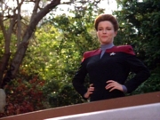
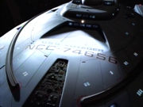
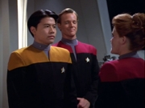
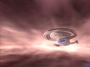
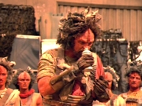
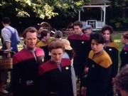
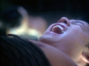
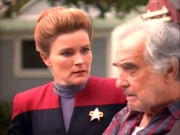

|
MANCHETE
DO EPISDIO
Piloto
inicia a série com o p direito,
graas a uma história boa e
coerente
Prximo
episódio
Sinopse:
Data Estelar: 48315.6.
 Uma
nave de renegados maquis desaparece misteriosamente em uma regio
do espao conhecida como Badlands. A Frota Estelar - que tinha um
oficial infiltrado na tripulao - designa a novssima USS
Voyager para investigar. Comandada pela capt Kathryn Janeway, a
nave parte da estao Deep Space Nine em direção s ltimas
coordenadas conhecidas. Ao
chegar ao campo energtico de difícil navegao, a nave
sondada por uma fonte alienígena que emana uma onda
ttrion-coerente. Incapaz de evit-la, a Voyager atingida e
deslocada instantaneamente cerca de 70.000 anos-luz, para o outro
lado da galáxia, uma regio isolada e desconhecida. Entre
mortos, feridos e uma nave com srias avarias, a capitã ordena o
incio dos reparos. Mas a Voyager novamente sondada e os
tripulantes abduzidos. Todos so transportados para um ambiente
hologrfico. Aps serem submetidos a experimentos mdicos, so
devolvidos.  Surgem
dois problemas. Um dos membros da tripulao de Janeway no
volta. Alm disso, eles ainda no sabem como retornar ao espao
da Federao. A capitã contata o comandante da nave maquis,
Chakotay, para saber se seu oficial desaparecido foi transportado
para l por engano. Ela descobre que a engenheira dos maquis
também no voltou. As duas
tripulaes decidem trabalhar juntas para recuperar os colegas e
encontrar um meio de voltar para casa.
Acabam
conhecendo um alienígena prestativo chamado Neelix, que os conduz
at o quinto planeta do sistema solar mais prximo. O planeta
ocupado pelos Kazons, uma raa militarizada. Os habitantes nativos,
Ocampas, deixaram a superfcie por conta de um desastre ambiental
irreversvel e há geraes vivem no subsolo, onde estão as
nicas fontes de gua daquele mundo. Aparentemente, gua to
escassa naquela regio do espao que motiva grandes conflitos
polticos e territoriais. Em
busca dos Ocampa, que, segundo Neelix, estão cuidando dos
tripulantes desaparecidos, o grupo avanado liderado pela capitã
entra em conflito com os Kazons. A equipe retorna Voyager depois
de resgatar uma Ocampa chamada Kes.  Com
a ajuda de Kes, as tripulaes descobrem um meio de se transportar
para o subsolo do planeta, na colnia dos Ocampas. Enquanto
investigam, percebem que a entidade que os levou ao Quadrante Delta
, na verdade, um "guardio" daquela raa e vem há
milnios protegendo-os e alimentando-os. Descobrem, também, que o
comportamento do ser vem mudando. Ele parece enviar suprimentos para
os prximos anos e reforar os campos de energia que impedem o
acesso da superfcie cidade subterrnea. Essas
aes levam a crer que a entidade está morrendo e quer garantir a
sobrevivncia dos Ocampas.
Os
oficiais desaparecidos so encontrados e todos retornam Voyager.
Com a notcia de que o guardio está morrendo, a capitã estuda a
possibilidade de usar a sua estao para enviar as naves de volta
ao espao da Federao. Mas os Kazons, interessados em controlar
a estrutura alienígena para ter acesso colnia Ocampa, aparecem
com reforos. Esto determinados a impedir que os oficiais usem a
tecnologia avanada do guardio.  As
naves inimigas abrem fogo e, enquanto a Voyager tenta se defender
com a ajuda dos maquis, Janeway e seu oficial de segurana, Tuvok,
transportam-se para a estao, para programar a volta ao Quadrante
Alfa. Entretanto, encontram o guardio e descobrem que ele acionou
o mecanismo de auto-destruio, visando impedir o acesso dos
Kazons sua tecnologia. Alega que se aquilo for permitido, os
Ocampas sero exterminados. Janeway pede a sua ajuda para lev-los
de volta para casa, mas a entidade diz que isso j está além de
seu poder. Ele está fraco demais.
A
batalha difícil. Os Kazons atacam com vantagem numrica.
Chakotay decide transportar a sua tripulao para a Voyager e
traar uma rota de coliso com uma das naves hostis. Quando essa
nave colide com a estao, danificando-a, a sequência de
destruio parada. O guardio, então, pede que a capitã
destrua a tecnologia para assegurar a sobrevivncia dos Ocampas. Janeway
se v em um grande dilema. Se destruir a estao, estar
destruindo a nica chance que tem que de levar sua tripulao
para casa instantaneamente. Por outro lado, se no destruir, ter
que conviver com a deciso de ter condenado morte uma
civilizao inteira.  De
volta Voyager, a capitã ordena que Tuvok dispare contra a
estrutura com dispositivos de tricobalto. Os Kazons retiram-se,
declarando que agora so oficialmente seus inimigos. Janeway, por
fim, convida os maquis a fazer parte de sua tripulao e inicia a
longa jornada de volta para a Terra, uma viagem que dever consumir
pelo menos 75 anos.
Comentrios:
"Caretaker" um episódio que serve muitssimo
bem ao seu propósito: apresenta um retrato fiel dos personagens
principais e ao mesmo tempo introduz de forma satisfatria a
premissa da série.
Aps
o "know-how" obtido com a produção dos pilotos de A
Nova Geração e Deep Space Nine, no foi
to complicado criar um piloto bem-sucedido. Somado a "Emissary",
este aqui o melhor piloto da história de Jornada nas
Estrelas.

Bem ao estilo das séries que o precederam, "Caretaker"
aproveita para mostrar um problema contemporneo dos mais
relevantes: a capacidade de inadvertidamente causar um desastre ecolgico.
Foi assim que o Guardio, criatura proveniente de outra galáxia,
adquiriu a "dúvida que nunca poder ser paga" com os
Ocampas. Ao explorar seu mundo, ele no-intencionalmente alterou o
ecossistema, tornando impossvel a ocorrncia de chuvas no
planeta.
At parece a atitude de uma "espcie bpede inferior",
que queima petrleo e carvo e emite um monte de CFC na atmosfera,
s para meio sculo depois descobrir que está detonando seu próprio
habitat...
 Alm
da boa apresentao da nave, a nova USS Voyager, o episódio também
levanta situaes a serem resolvidas no futuro, como os conflitos
entre federados e maquis e a substituio dos oficiais mortos
quando da abduo da nave pelo Guardio. Infelizmente, esse tipo
de recurso seria muito pouco utilizado pela série, que se
concentraria em histórias centradas em um único episódio.
O piloto também apresentaria os Kazons, uma primeira tentativa de
criar uma raa inimiga recorrente para Voyager. No princpio, deu
certo. Mas logo eles acabaram se tornando desinteressantes.
 A
participação especial de Quark e a partida de Deep Space
Nine foram bons truques para tentar trazer a audiência das
séries anteriores para a nova encarnao do franchise. Ao longo
do tempo, entretanto, a polarizao foi inevitvel, separando os
trekkers em fs de Deep Space Nine ou de Voyager,
com poucas interseces entre os dois grupos.
De um jeito ou de outro, Michael Piller, Jeri Taylor e Rick Berman
comearam a série com o p direito. Infelizmente, para andar,
depois do p direito, sempre vem o esquerdo... Citaes:
Janeway - "Mr. Kim,
at ease before you sprain something."
("Senhor Kim, vontade, antes que desloque alguma
coisa.")
Stadi - "Do you always fly at women at warp speed, Mr.
Paris?"
("Você sempre voa nas mulheres em velocidade de dobra, sr.
Paris?")
Tom - "Only when they're in visual range."
("S quando elas estão em alcance visual.")
B'Elanna - "Who is she to be making these decisions for
all of us?"
("Que ela para tomar essas decises por todos ns?")
Chakotay - "She's the captain."
("Ela o capitão.")
Trivia:
 Voyager a quarta série "live-action"
de Jornada nas Estrelas, e a primeira (desde A
Nova Geração) a no ser exibida pelo sistema de
syndication. A série transmitida pela rede de TV da própria
Paramount, a UPN.
Voyager a quarta série "live-action"
de Jornada nas Estrelas, e a primeira (desde A
Nova Geração) a no ser exibida pelo sistema de
syndication. A série transmitida pela rede de TV da própria
Paramount, a UPN.
O diretor Winrich Kolbe o mesmo que dirigiu o episódio duplo
final da Nova Geração, "All Good
Things...".
O ator que interpreta o vulcano Tuvok Tim Russ, que j havia
feito uma participação como membro de um grupo de terroristas em
um dos episódios do 6 ano da Nova Geração, "Starship
Mine". Tim Russ também fez participaes na série Deep
Space Nine e no filme para cinema "Jornada nas
Estrelas - Generations", sempre como coadjuvante.
Robert Duncan McNeill (Tom Paris) também j participou da Nova
Geração, como um cadete da Academia da Frota, no episódio
do 5 ano "The First Duty".
Genevive Bujold foi a primeira atriz a interpretar Janeway, porm
pulou fora da série aps filmar algumas cenas do episódio-piloto,
pois no aguentou o ritmo das gravaes. Kate Mulgrew foi então
contratada para assumir o papel.
Como j havia acontecido no episódio-piloto da Nova Geração,
um integrante do elenco fixo de outra série de Jornada
faz uma apario especial neste episódio. Armin Shimerman,
mais conhecido como o Ferengi Quark.
Neste episódio so introduzidas as raas Kazon e Ocampa.
Um "blooper" (erro de gravao) ocorre enquanto a nave
auxiliar em que estão Tom Paris e a Tenente Stadi vai de encontro
nave Voyager, atracada na estao espacial Deep Space Nine. Em
uma cena, o nmero de registro no casco da nave 71325, e em
outra cena, 1701-D!
O episódio original contm um dilogo entre a piloto Stadi e Tom
Paris, enquanto ela o conduz at a Voyager, que no existe na verso
em duas partes, feita para a segunda exibio do episódio. Esta
segunda verso a que foi exibida pelo USA Network. A verso
original existe no Brasil em VHS, lançada pela CIC Vdeo.
Ficha
técnica:
História de Rick Berman,
Michael Piller e Jeri Taylor
Roteiro de Michael Piller e Jeri
Taylor
Direo de Winrich Kolbe
Exibido em 16/01/1995
Produção: 001
Elenco:
Kate Mulgrew como
Kathryn Janeway
Robert Beltran como Chakotay
Roxann Biggs-Dawson como B'Elanna Torres
Robert Duncan McNeill como Tom Paris
Jennifer Lien como Kes
Ethan Phillips como Neelix
Robert Picardo como Doutor
Tim Russ como Tuvok
Garrett Wang como Harry Kim
Elenco convidado:
Bruce French como médico Ocampa
Richard Poe como Gul Evek
Josh Clark como Carey
Alicia Coppola como tenente Stadi
Stan Ivar como Mark
Scott Jaeck como primeiro-oficial Cavit
Eric David Johnson como Daggin
Basil Langton como homem do banjo
Scott MacDonald como Rollins
Jeff McCarthy como médico humano
Gavan O'Herlihy como Jabin
Jennifer Parsons como enfermeira Ocampa
Angela Paton como tia Adah
Keely Sims como filha do fazendeiro
David Selsburg como Toscat
Armin Shimerman como Quark
Prximo
episódio
|